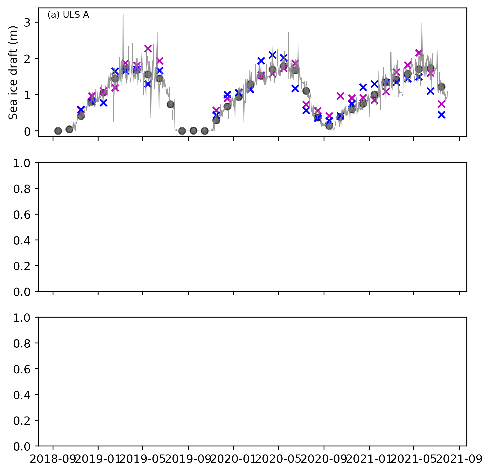
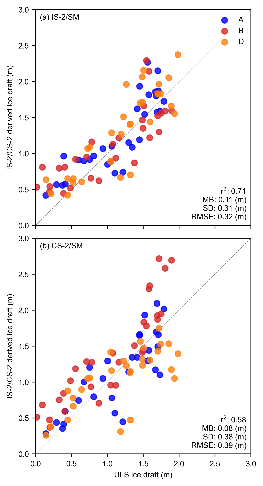

Comparisons with BGEP ULS sea ice draft estimates updated with new data#
Summary: In this notebook, we produce comparisons of the gridded ICESat-2 sea ice thickness data with draft measurements obtained from Upward Looking Sonar moorings deployed in the Beaufort Sea.
Version history: Version 1 (01/01/2022)
Import notebook dependencies#
import xarray as xr
import pandas as pd
import numpy as np
import itertools
import pyproj
from netCDF4 import Dataset
import scipy.interpolate
from utils.read_data_utils import read_book_data, read_IS2SITMOGR4 # Helper function for reading the data from the bucket
from utils.plotting_utils import compute_gridcell_winter_means, interactiveArcticMaps, interactive_winter_mean_maps, interactive_winter_comparison_lineplot # Plotting
from scipy import stats
import datetime
# Plotting dependencies
import cartopy.crs as ccrs
from textwrap import wrap
import hvplot.pandas
import holoviews as hv
import matplotlib.pyplot as plt
from matplotlib.axes import Axes
from cartopy.mpl.geoaxes import GeoAxes
GeoAxes._pcolormesh_patched = Axes.pcolormesh # Helps avoid some weird issues with the polar projection
%config InlineBackend.figure_format = 'retina'
import matplotlib as mpl
mpl.rcParams['figure.dpi'] = 200 # Sets figure size in the notebook
# Remove warnings to improve display
import warnings
warnings.filterwarnings('ignore')
# DO ONE RUN APR 2021 WITH SM AS THIS IS WHEN IT IS AVAILABLE TO
start_date = "Nov 2018"
end_date = "July 2021"
options = {
'IS-2/SM': {'thickness': 'ice_thickness_sm', 'snow_depth': 'snow_depth_sm'},
'CS-2/SM': {'thickness': 'cs2_sea_ice_thickness_UBRIS', 'snow_depth': 'snow_depth_sm'}
}
IS2SITMOGR4_v3 = read_IS2SITMOGR4(data_type='zarr-s3', persist=True)
IS2SITMOGR4_v3
load zarr from S3 bucket
zarr_path: s3://icesat-2-sea-ice-us-west-2/IS2SITMOGR4_V3/IS2SITMOGR4_V3_201811-202404.zarr
<xarray.Dataset>
Dimensions: (time: 46, y: 448, x: 304)
Coordinates:
latitude (y, x) float32 31.1 31.2 ... 34.58 34.47
longitude (y, x) float32 168.3 168.1 ... -10.18 -9.999
* time (time) datetime64[ns] 2018-11-01 ... 2024...
* x (x) float32 -3.838e+06 ... 3.738e+06
* y (y) float32 5.838e+06 ... -5.338e+06
Data variables: (12/27)
crs (time) int32 dask.array<chunksize=(46,), meta=np.ndarray>
freeboard (time, y, x) float32 dask.array<chunksize=(1, 448, 304), meta=np.ndarray>
freeboard_int (time, y, x) float32 dask.array<chunksize=(1, 448, 304), meta=np.ndarray>
ice_density (time, y, x) float32 dask.array<chunksize=(1, 448, 304), meta=np.ndarray>
ice_density_j22 (time, y, x) float32 dask.array<chunksize=(1, 448, 304), meta=np.ndarray>
ice_thickness (time, y, x) float32 dask.array<chunksize=(1, 448, 304), meta=np.ndarray>
... ...
snow_density_sm (time, y, x) float32 dask.array<chunksize=(1, 448, 304), meta=np.ndarray>
snow_density_w99 (time, y, x) float32 dask.array<chunksize=(1, 448, 304), meta=np.ndarray>
snow_depth (time, y, x) float32 dask.array<chunksize=(1, 448, 304), meta=np.ndarray>
snow_depth_int (time, y, x) float32 dask.array<chunksize=(1, 448, 304), meta=np.ndarray>
snow_depth_mw99 (time, y, x) float32 dask.array<chunksize=(1, 448, 304), meta=np.ndarray>
snow_depth_sm (time, y, x) float32 dask.array<chunksize=(1, 448, 304), meta=np.ndarray>
Attributes:
contact: Alek Petty (akpetty@umd.edu)
description: Aggregated IS2SITMOGR4 V3 dataset.
history: Created 28/11/23
reference: Official NSIDC data doi: 10.5067/CV6JEXEE31HF. Derived data...# Get some map proj info needed for later functions
out_proj = 'EPSG:3411'
mapProj = pyproj.Proj("+init=" + out_proj)
xIS2 = IS2SITMOGR4_v3.x.values
yIS2 = IS2SITMOGR4_v3.y.values
xptsIS2, yptsIS2 = np.meshgrid(xIS2, yIS2)
out_lons = IS2SITMOGR4_v3.longitude.values
out_lats = IS2SITMOGR4_v3.latitude.values
# Set Inner Arctic domain
innerArctic = [1,2,3,4,5,6]
import glob
from datetime import datetime
def add_time_dim_v3(xda):
""" dummy function to just set current time as a new dimension to concat files over, change later! """
xda = xda.set_coords(["latitude","longitude", "y", "x"])
xda = xda.expand_dims(time = [datetime.now()])
return xda
def read_IS2SITMOGR4_SUMMER(version='V0', local_data_path="./data/IS2SITMOGR4_SUMMER/"):
""" Read in IS2SITMOGR4 summer monthly gridded thickness dataset from local netcdf files
"""
print(local_data_path+version+'/*.nc')
filenames = glob.glob(local_data_path+version+'/*.nc')
if len(filenames) == 0:
raise ValueError("No files, exit")
return None
dates = [pd.to_datetime(file.split("IS2SIT_SUMMER_01_")[1].split("_")[0], format = "%Y%m") for file in filenames]
# Add a dummy time then add the dates I want, seemed the easiest solution
is2_ds = xr.open_mfdataset(filenames, preprocess = add_time_dim_v3, engine='netcdf4')
is2_ds["time"] = dates
# Sort by time as glob file list wasn't!
is2_ds = is2_ds.sortby("time")
is2_ds = is2_ds.set_coords(["latitude","longitude","y","x"])
is2_ds = is2_ds.assign_coords(longitude=(["y","x"], is2_ds.longitude.values))
is2_ds = is2_ds.assign_coords(latitude=(["y","x"], is2_ds.latitude.values))
is2_ds = is2_ds.assign_attrs(description="Aggregated IS2SITMOGR4 summer "+version+" dataset.")
return is2_ds
IS2SITMOGR4_summer_v0 = read_IS2SITMOGR4_SUMMER()
IS2SITMOGR4_summer_v0
./data/IS2SITMOGR4_SUMMER/V0/*.nc
<xarray.Dataset>
Dimensions: (time: 11, y: 448, x: 304)
Coordinates:
* time (time) datetime64[ns] 2019-05-01 ... 2021...
longitude (y, x) float32 168.3 168.1 ... -10.18 -9.999
latitude (y, x) float32 31.1 31.2 ... 34.58 34.47
* x (x) float32 -3.838e+06 ... 3.738e+06
* y (y) float32 5.838e+06 ... -5.338e+06
Data variables: (12/26)
crs (time) int32 -2147483647 ... -2147483647
ice_thickness_sm (time, y, x) float32 dask.array<chunksize=(1, 448, 304), meta=np.ndarray>
ice_thickness_unc (time, y, x) float32 dask.array<chunksize=(1, 448, 304), meta=np.ndarray>
num_segments (time, y, x) float32 dask.array<chunksize=(1, 448, 304), meta=np.ndarray>
mean_day_of_month (time, y, x) float32 dask.array<chunksize=(1, 448, 304), meta=np.ndarray>
snow_depth_sm (time, y, x) float32 dask.array<chunksize=(1, 448, 304), meta=np.ndarray>
... ...
ice_thickness_unc_freeboard (time, y, x) float32 dask.array<chunksize=(1, 448, 304), meta=np.ndarray>
ice_thickness_unc_ice_density (time, y, x) float32 dask.array<chunksize=(1, 448, 304), meta=np.ndarray>
ice_thickness_unc_snow_density (time, y, x) float32 dask.array<chunksize=(1, 448, 304), meta=np.ndarray>
ice_thickness_unc_snow_depth (time, y, x) float32 dask.array<chunksize=(1, 448, 304), meta=np.ndarray>
sea_ice_conc (time, y, x) float32 dask.array<chunksize=(1, 448, 304), meta=np.ndarray>
region_mask (time, y, x) float32 dask.array<chunksize=(1, 448, 304), meta=np.ndarray>
Attributes:
contact: Alek Petty (akpetty@umd.edu)
description: Aggregated IS2SITMOGR4 summer V0 dataset.
history: Created 20/12/23IS2SITMOGR4_v3 = IS2SITMOGR4_summer_v0.merge(IS2SITMOGR4_v3)
IS2SITMOGR4_v3
<xarray.Dataset>
Dimensions: (time: 57, x: 304, y: 448)
Coordinates:
* time (time) datetime64[ns] 2018-11-01 ... 2024...
* x (x) float32 -3.838e+06 ... 3.738e+06
* y (y) float32 5.838e+06 ... -5.338e+06
longitude (y, x) float32 168.3 168.1 ... -10.18 -9.999
latitude (y, x) float32 31.1 31.2 ... 34.58 34.47
Data variables: (12/36)
crs (time) float64 dask.array<chunksize=(57,), meta=np.ndarray>
ice_thickness_sm (time, y, x) float32 dask.array<chunksize=(1, 448, 304), meta=np.ndarray>
ice_thickness_unc (time, y, x) float32 dask.array<chunksize=(1, 448, 304), meta=np.ndarray>
num_segments (time, y, x) float32 dask.array<chunksize=(1, 448, 304), meta=np.ndarray>
mean_day_of_month (time, y, x) float32 dask.array<chunksize=(1, 448, 304), meta=np.ndarray>
snow_depth_sm (time, y, x) float32 dask.array<chunksize=(1, 448, 304), meta=np.ndarray>
... ...
ice_type (time, y, x) float32 dask.array<chunksize=(1, 448, 304), meta=np.ndarray>
snow_density (time, y, x) float32 dask.array<chunksize=(1, 448, 304), meta=np.ndarray>
snow_density_w99 (time, y, x) float32 dask.array<chunksize=(1, 448, 304), meta=np.ndarray>
snow_depth (time, y, x) float32 dask.array<chunksize=(1, 448, 304), meta=np.ndarray>
snow_depth_int (time, y, x) float32 dask.array<chunksize=(1, 448, 304), meta=np.ndarray>
snow_depth_mw99 (time, y, x) float32 dask.array<chunksize=(1, 448, 304), meta=np.ndarray>
Attributes:
contact: Alek Petty (akpetty@umd.edu)
description: Aggregated IS2SITMOGR4 summer V0 dataset.
history: Created 20/12/23def getCS2ubris(mapProj, dataPathCS2, dataset):
""" Read in the University of Bristol CryoSat-2 sea ice thickness data
Args:
dataPathCS2 (str): location of data
Returns
xptsT (2d numpy array): x coordinates on our map projection
yptsT (2d numpy array): y coordinates on our map projection
thicknessCS (2d numpy array): monthly sea ice thickness estimates
"""
ubris_f = xr.open_dataset(dataPathCS2+dataset, decode_times=False)
# Issue with time starting from year 0!
# Re-set it to start from some other year
ubris_f = ubris_f.rename({'Time':'time'})
ubris_f['time'] = ubris_f['time']-679352
ubris_f.time.attrs["units"] = "days since 1860-01-01"
decoded_time = xr.decode_cf(ubris_f)
ubris_f['time']=decoded_time.time
ubris_f = ubris_f.swap_dims({'t': 'time'})
# Resample to monthly, note that the S just makes the index start on the 1st of the month
thicknessCS = ubris_f.resample(time="MS").mean()
xptsT, yptsT = mapProj(thicknessCS.isel(time=0).Longitude, thicknessCS.isel(time=0).Latitude)
return xptsT, yptsT, thicknessCS
def regridToICESat2(dataArrayNEW, xptsNEW, yptsNEW, xptsIS2, yptsIS2):
""" Regrid new data to ICESat-2 grid
Args:
dataArrayNEW (xarray DataArray): Numpy variable array to be gridded to ICESat-2 grid
xptsNEW (numpy array): x-values of dataArrayNEW projected to ICESat-2 map projection
yptsNEW (numpy array): y-values of dataArrayNEW projected to ICESat-2 map projection
xptsIS2 (numpy array): ICESat-2 longitude projected to ICESat-2 map projection
yptsIS2 (numpy array): ICESat-2 latitude projected to ICESat-2 map projection
Returns:
gridded (numpy array): data regridded to ICESat-2 map projection
"""
#gridded = []
#for i in range(len(dataArrayNEW.values)):
#gridded = scipy.interpolate.griddata((xptsNEW.flatten(),yptsNEW.flatten()), dataArrayNEW.flatten(), (xptsIS2, yptsIS2), method = 'nearest')
try:
gridded = scipy.interpolate.griddata((xptsNEW.flatten(),yptsNEW.flatten()), dataArrayNEW.flatten(), (xptsIS2, yptsIS2), method = 'nearest')
except:
try:
gridded = scipy.interpolate.griddata((xptsNEW,yptsNEW), dataArrayNEW, (xptsIS2, yptsIS2), method = 'nearest')
except:
print('Error interpolating..')
return gridded
def regrid_ubris_is2(mapProj, xptsIS2, yptsIS2, out_lons, out_lats, date_range, dataPathCS2='/home/jovyan/Data/CS2/UIT/', dataset='ubristol_cryosat2_seaicethickness_nh_80km_v1p7.nc'):
cs2_ubris = []
valid_dates=[]
xptsT_ubris, yptsT_ubris, cs2_ubris_raw = getCS2ubris(mapProj, dataPathCS2, dataset)
for date in date_range:
try:
cs2_ubris_temp_is2grid = regridToICESat2(cs2_ubris_raw.Sea_Ice_Thickness.sel(time=date).values, xptsT_ubris, yptsT_ubris, xptsIS2, yptsIS2)
ice_conc_is2grid = regridToICESat2(cs2_ubris_raw.Sea_Ice_Concentration.sel(time=date).values, xptsT_ubris, yptsT_ubris, xptsIS2, yptsIS2)
#cs2_ubris_temp_is2grid[ice_conc_is2grid<0.5]=np.nan
cs2_ice_type_is2grid = regridToICESat2(cs2_ubris_raw.Sea_Ice_Type.sel(time=date).values, xptsT_ubris, yptsT_ubris, xptsIS2, yptsIS2)
except:
print(date)
print('no CS-2 data or issue with gridding, so skipping...')
continue
valid_dates.append(date)
#cs2_ubris_temp_is2grid_xr = xr.DataArray(data = cs2_ubris_temp_is2grid,
# dims = ['y', 'x'],
# coords = {'latitude': (('y','x'), out_lats), 'longitude': (('y','x'), out_lons), 'x': (('x'), IS2SITMOGR4_v3.x.values), 'y': (('y'), IS2SITMOGR4_v3.y.values)},
# name = 'cs2_sea_ice_thickness_UBRIS')
cs2_ubris_temp_is2grid_xr = xr.Dataset({'cs2_sea_ice_thickness_UBRIS': (('y', 'x'), cs2_ubris_temp_is2grid),
'cs2_sea_ice_type_UBRIS': (('y', 'x'), cs2_ice_type_is2grid)},
coords = {'latitude': (('y','x'), out_lats), 'longitude': (('y','x'), out_lons), 'x': (('x'), IS2SITMOGR4_v3.x.values), 'y': (('y'), IS2SITMOGR4_v3.y.values)}
)
cs2_ubris.append(cs2_ubris_temp_is2grid_xr)
cs2_ubris = xr.concat(cs2_ubris, 'time')
#cs2_ubris = cs2_ubris.assign_coords(time=valid_dates)
cs2_ubris_attrs = {'units': 'meters', 'long_name': 'University of Bristol CryoSat-2 Arctic sea ice thickness', 'data_download': 'https://data.bas.ac.uk/full-record.php?id=GB/NERC/BAS/PDC/01613',
'download_date': '09-2022', 'citation': 'Landy, J.C., Dawson, G.J., Tsamados, M. et al. A year-round satellite sea-ice thickness record from CryoSat-2. Nature 609, 517–522 (2022). https://doi.org/10.1038/s41586-022-05058-5'}
cs2_ubris = cs2_ubris.assign_coords(time=valid_dates)
cs2_ubris = cs2_ubris.assign_attrs(cs2_ubris_attrs)
return cs2_ubris
start_date_cs2 = "Nov 2018"
end_date_cs2 = "July 2021"
# MS indicates a time frequency of start of the month
date_range_cs2 = pd.date_range(start=start_date_cs2, end=end_date_cs2, freq='MS')
cs2_ubris = regrid_ubris_is2(mapProj, xptsIS2, yptsIS2, out_lons, out_lats, date_range_cs2,
dataPathCS2='/Users/akpetty/Data/CS2/', dataset='uit_cryosat2_seaicethickness_nh_80km_v1p7.nc')
cs2_ubris
<xarray.Dataset>
Dimensions: (time: 33, y: 448, x: 304)
Coordinates:
latitude (y, x) float32 31.1 31.2 31.3 ... 34.58 34.47
longitude (y, x) float32 168.3 168.1 ... -10.18 -9.999
* x (x) float32 -3.838e+06 -3.812e+06 ... 3.738e+06
* y (y) float32 5.838e+06 5.812e+06 ... -5.338e+06
* time (time) datetime64[ns] 2018-11-01 ... 2021-07-01
Data variables:
cs2_sea_ice_thickness_UBRIS (time, y, x) float64 0.0 0.0 0.0 ... 0.0 0.0
cs2_sea_ice_type_UBRIS (time, y, x) float64 nan nan nan ... nan nan
Attributes:
units: meters
long_name: University of Bristol CryoSat-2 Arctic sea ice thickness
data_download: https://data.bas.ac.uk/full-record.php?id=GB/NERC/BAS/PDC...
download_date: 09-2022
citation: Landy, J.C., Dawson, G.J., Tsamados, M. et al. A year-rou...IS2SITMOGR4_v3 = IS2SITMOGR4_v3.merge(cs2_ubris)
#IS2SITMOGR4_v3 = IS2SITMOGR4_v3.assign(cs2_sea_ice_thickness_UBRIS=cs2_ubris)
IS2SITMOGR4_v3
<xarray.Dataset>
Dimensions: (time: 57, x: 304, y: 448)
Coordinates:
* time (time) datetime64[ns] 2018-11-01 ... 2024...
* x (x) float32 -3.838e+06 ... 3.738e+06
* y (y) float32 5.838e+06 ... -5.338e+06
longitude (y, x) float32 168.3 168.1 ... -10.18 -9.999
latitude (y, x) float32 31.1 31.2 ... 34.58 34.47
Data variables: (12/38)
crs (time) float64 dask.array<chunksize=(57,), meta=np.ndarray>
ice_thickness_sm (time, y, x) float32 dask.array<chunksize=(1, 448, 304), meta=np.ndarray>
ice_thickness_unc (time, y, x) float32 dask.array<chunksize=(1, 448, 304), meta=np.ndarray>
num_segments (time, y, x) float32 dask.array<chunksize=(1, 448, 304), meta=np.ndarray>
mean_day_of_month (time, y, x) float32 dask.array<chunksize=(1, 448, 304), meta=np.ndarray>
snow_depth_sm (time, y, x) float32 dask.array<chunksize=(1, 448, 304), meta=np.ndarray>
... ...
snow_density_w99 (time, y, x) float32 dask.array<chunksize=(1, 448, 304), meta=np.ndarray>
snow_depth (time, y, x) float32 dask.array<chunksize=(1, 448, 304), meta=np.ndarray>
snow_depth_int (time, y, x) float32 dask.array<chunksize=(1, 448, 304), meta=np.ndarray>
snow_depth_mw99 (time, y, x) float32 dask.array<chunksize=(1, 448, 304), meta=np.ndarray>
cs2_sea_ice_thickness_UBRIS (time, y, x) float64 0.0 0.0 0.0 ... nan nan
cs2_sea_ice_type_UBRIS (time, y, x) float64 nan nan nan ... nan nan
Attributes:
contact: Alek Petty (akpetty@umd.edu)
description: Aggregated IS2SITMOGR4 summer V0 dataset.
history: Created 20/12/23# Issue in how region mask was assigned
#IS2SITMOGR4_v3['region_mask'] = IS2SITMOGR4_v3['region_mask'].isel(time=0, drop=True)
IS2SITMOGR4_v3['time'] = IS2SITMOGR4_v3['time'] + pd.Timedelta(days=14)
# Define the cutoff date
#cutoff_date = pd.Timestamp('2021-08-15')
# Filter the data to include only dates up to the cutoff date to be consistent with SM
#IS2SITMOGR4_v3 = IS2SITMOGR4_v3.where(IS2SITMOGR4_v3['time'] >= cutoff_date, drop=True)
#IS2SITMOGR4_v3_summer = IS2SITMOGR4_v3['cs2_sea_ice_thickness_UBRIS'].sel(time=IS2SITMOGR4_v3['time.month'].isin(7))
#IS2SITMOGR4_v3_summer
# Estimate ice draft from the ICESat-2 data for more direct comparison with ULS draft measurements
# NB: Another option (not taken) is to simply multiply ULS drafts by 1.1 to convert to thickness (AWI do this)
# Include extra var = '_int' to use interpolated values, not recommended for validation purposes.
# Define the variables for each option
IS2SITMOGR4_v3[f'ice_draft_IS-2/SM'] = (IS2SITMOGR4_v3['ice_thickness_sm'] - IS2SITMOGR4_v3['freeboard'] + IS2SITMOGR4_v3['snow_depth_sm'])
cs2_density = 882.+(IS2SITMOGR4_v3['cs2_sea_ice_type_UBRIS']*35.)
IS2SITMOGR4_v3[f'ice_draft_CS-2/SM'] = ((IS2SITMOGR4_v3['cs2_sea_ice_thickness_UBRIS']*cs2_density) + (IS2SITMOGR4_v3['snow_depth_sm'] + IS2SITMOGR4_v3['snow_density_sm']))/1025.
# Calculate ice draft for each option
#for option, vars in options.items():
# thickness_var = vars['thickness']
# snow_depth_var = vars['snow_depth']
# IS2SITMOGR4_v3[f'ice_draft_{option}'] = (IS2SITMOGR4_v3[thickness_var] - IS2SITMOGR4_v3['freeboard'] + IS2SITMOGR4_v3[snow_depth_var])
# Initialize map projection and project data to it
IS2_date_range = pd.date_range(start=start_date, end=end_date, freq='MS')+ pd.Timedelta(days=14)# MS indicates a time frequency of start of the month
#IS2_date_range = IS2_date_range[((IS2_date_range.month <5) | (IS2_date_range.month > 8))]
IS2_date_range_strs=[str(date.year)+'-%02d'%(date.month) for date in IS2_date_range]
IS2_date_range_strs
['2018-11',
'2018-12',
'2019-01',
'2019-02',
'2019-03',
'2019-04',
'2019-05',
'2019-06',
'2019-07',
'2019-08',
'2019-09',
'2019-10',
'2019-11',
'2019-12',
'2020-01',
'2020-02',
'2020-03',
'2020-04',
'2020-05',
'2020-06',
'2020-07',
'2020-08',
'2020-09',
'2020-10',
'2020-11',
'2020-12',
'2021-01',
'2021-02',
'2021-03',
'2021-04',
'2021-05',
'2021-06',
'2021-07']
# This is the value in meters of the aggregation length-scale for the ICESat-2 data
comp_res=50000
# Wrange ULS data
# Could really convert this to another data wrangling notebook and store the derived output as netcdfs
dataPathULS='./data/'
def get_ULS_dates(uls_mean_monthly_draft, uls_dates, date):
#print(date)
try:
return uls_mean_monthly_draft[uls_dates==date].values[0]
except:
return np.nan
def get_uls_year(letter, year):
if letter=='a':
print('Mooring A (75.0 N, 150 W)')
uls_x, uls_y = mapProj(-150., 75.)
if letter=='b':
print('Mooring B (78.4 N, 150.0 W)')
uls_x, uls_y = mapProj(-150., 78.4)
if letter=='d':
print('Mooring D (74.0 N, 140.0 W)')
uls_x, uls_y = mapProj(-140., 74.)
uls = pd.read_csv(dataPathULS+'uls'+year+letter+'_draft.dat', sep='\s+',names = ['date', 'time', 'draft'], header=2)
utc_datetime_uls = pd.to_datetime(uls['date'], format='%Y%m%d')
uls_mean_daily_draft = uls['draft'].groupby([utc_datetime_uls.dt.date]).mean()
uls_mean_monthly_draft = uls['draft'].groupby([utc_datetime_uls.dt.to_period('m')]).mean()
#print(uls_mean_monthly_draft)
return uls_mean_daily_draft, uls_mean_monthly_draft, uls_x, uls_y
uls_mean_daily_draft_a_18, uls_mean_monthly_draft_a_18, uls_x_a, uls_y_a = get_uls_year('a', '18')
uls_mean_daily_draft_b_18, uls_mean_monthly_draft_b_18, uls_x_b, uls_y_b = get_uls_year('b', '18')
uls_mean_daily_draft_d_18, uls_mean_monthly_draft_d_18, uls_x_d, uls_y_d = get_uls_year('d', '18')
Mooring A (75.0 N, 150 W)
Mooring B (78.4 N, 150.0 W)
Mooring D (74.0 N, 140.0 W)
uls_mean_daily_draft_a_21, uls_mean_monthly_draft_a_21, _, _ = get_uls_year('a', '21')
uls_mean_daily_draft_b_21, uls_mean_monthly_draft_b_21, _, _ = get_uls_year('b', '21')
uls_mean_daily_draft_d_21, uls_mean_monthly_draft_d_21, _, _ = get_uls_year('d', '21')
Mooring A (75.0 N, 150 W)
Mooring B (78.4 N, 150.0 W)
Mooring D (74.0 N, 140.0 W)
# Combine data for all years
uls_mean_daily_draft_a = pd.concat([uls_mean_daily_draft_a_18, uls_mean_daily_draft_a_21])
uls_mean_daily_draft_b = pd.concat([uls_mean_daily_draft_b_18, uls_mean_daily_draft_b_21])
uls_mean_daily_draft_d = pd.concat([uls_mean_daily_draft_d_18, uls_mean_daily_draft_d_21])
# Combine data for all years
uls_mean_monthly_draft_a = pd.concat([uls_mean_monthly_draft_a_18, uls_mean_monthly_draft_a_21])
uls_mean_monthly_draft_b = pd.concat([uls_mean_monthly_draft_b_18, uls_mean_monthly_draft_b_21])
uls_mean_monthly_draft_d = pd.concat([uls_mean_monthly_draft_d_18, uls_mean_monthly_draft_d_21])
uls_mean_daily_draft_d
date
2018-09-15 0.000001
2018-09-16 0.000000
2018-09-17 0.000000
2018-09-18 0.188649
2018-09-19 0.093248
...
2022-10-03 0.421657
2022-10-04 0.783245
2022-10-05 0.817494
2022-10-06 0.455339
2022-10-07 0.485172
Name: draft, Length: 1455, dtype: float64
end_date = "2021-08-01"
uls_mean_daily_draft_a = uls_mean_daily_draft_a[uls_mean_daily_draft_a.index < np.datetime64(end_date)].dropna()
uls_mean_daily_draft_b = uls_mean_daily_draft_b[uls_mean_daily_draft_b.index < np.datetime64(end_date)].dropna()
uls_mean_daily_draft_d = uls_mean_daily_draft_d[uls_mean_daily_draft_d.index < np.datetime64(end_date)].dropna()
uls_mean_monthly_draft_a = uls_mean_monthly_draft_a[uls_mean_monthly_draft_a.index < end_date].dropna()
uls_mean_monthly_draft_b = uls_mean_monthly_draft_b[uls_mean_monthly_draft_b.index < end_date].dropna()
uls_mean_monthly_draft_d = uls_mean_monthly_draft_d[uls_mean_monthly_draft_d.index < end_date].dropna()
def grid_IS2_nearby(date, option, uls_x, uls_y, res=50000):
print(date)
IS2 = IS2SITMOGR4_v3['ice_draft_'+option].sel(time=date)
#xptsIS2g, yptsIS2g = mapProj(IS2.longitude.values, IS2.latitude.values)
dist = np.sqrt( (xptsIS2 - uls_x)**2 + (yptsIS2 - uls_y)**2 )
IS2_uls = IS2.where(dist<res).mean(skipna=True).values
#print('Number of valid IS-2 grid cells in month '+str(date)[0:7]+':', np.count_nonzero(~np.isnan(IS2.where(dist<res))))
#Another option I first explored, coarsen the data then do nearest neighbor...provided similar results but above is more flexible.
#if coarse_res>1:
#Coarsen array by coarse_res in x/y directions (note that each grid-cell represents 25 km so 4 = 100 km)
# IS2 = IS2.coarsen(x=res, y=res, boundary='pad').mean()
#IS2_uls = scipy.interpolate.griddata((xptsIS2.flatten(), yptsIS2.flatten()), IS2.values.flatten(), (uls_x, uls_y), method = 'nearest')
print(date, option, IS2_uls)
return IS2_uls
# Compute monthly ULS values for each option
monthly_IS2_at_ULS_a_options = {}
monthly_IS2_at_ULS_b_options = {}
monthly_IS2_at_ULS_d_options = {}
monthly_IS2_at_ULS_all_options = {}
for option in options.keys():
monthly_IS2_at_ULS_a_options[option] = [
grid_IS2_nearby(date, option, uls_x_a, uls_y_a, res=comp_res) for date in IS2_date_range
]
monthly_IS2_at_ULS_b_options[option] = [
grid_IS2_nearby(date, option,uls_x_b, uls_y_b, res=comp_res) for date in IS2_date_range
]
monthly_IS2_at_ULS_d_options[option] = [
grid_IS2_nearby(date, option,uls_x_d, uls_y_d, res=comp_res) for date in IS2_date_range
]
# Combine all ULS values for the current option
monthly_IS2_at_ULS_all_options[option] = (
monthly_IS2_at_ULS_a_options[option] +
monthly_IS2_at_ULS_b_options[option] +
monthly_IS2_at_ULS_d_options[option]
)
2018-11-15 00:00:00
2018-11-15 00:00:00 IS-2/SM 0.57753843
2018-12-15 00:00:00
2018-12-15 00:00:00 IS-2/SM 0.9665833
2019-01-15 00:00:00
2019-01-15 00:00:00 IS-2/SM 1.1007692
2019-02-15 00:00:00
2019-02-15 00:00:00 IS-2/SM 1.1899999
2019-03-15 00:00:00
2019-03-15 00:00:00 IS-2/SM 1.8701539
2019-04-15 00:00:00
2019-04-15 00:00:00 IS-2/SM 1.8025454
2019-05-15 00:00:00
2019-05-15 00:00:00 IS-2/SM 2.2683637
2019-06-15 00:00:00
2019-06-15 00:00:00 IS-2/SM 1.9358462
2019-07-15 00:00:00
2019-07-15 00:00:00 IS-2/SM nan
2019-08-15 00:00:00
2019-08-15 00:00:00 IS-2/SM nan
2019-09-15 00:00:00
2019-09-15 00:00:00 IS-2/SM nan
2019-10-15 00:00:00
2019-10-15 00:00:00 IS-2/SM nan
2019-11-15 00:00:00
2019-11-15 00:00:00 IS-2/SM 0.567125
2019-12-15 00:00:00
2019-12-15 00:00:00 IS-2/SM 0.8962307
2020-01-15 00:00:00
2020-01-15 00:00:00 IS-2/SM 1.0677693
2020-02-15 00:00:00
2020-02-15 00:00:00 IS-2/SM 1.1531111
2020-03-15 00:00:00
2020-03-15 00:00:00 IS-2/SM 1.5443335
2020-04-15 00:00:00
2020-04-15 00:00:00 IS-2/SM 1.5742726
2020-05-15 00:00:00
2020-05-15 00:00:00 IS-2/SM 1.7251667
2020-06-15 00:00:00
2020-06-15 00:00:00 IS-2/SM 1.8589231
2020-07-15 00:00:00
2020-07-15 00:00:00 IS-2/SM 0.7273846
2020-08-15 00:00:00
2020-08-15 00:00:00 IS-2/SM 0.5566667
2020-09-15 00:00:00
2020-09-15 00:00:00 IS-2/SM 0.4178182
2020-10-15 00:00:00
2020-10-15 00:00:00 IS-2/SM 0.9648
2020-11-15 00:00:00
2020-11-15 00:00:00 IS-2/SM 0.9116154
2020-12-15 00:00:00
2020-12-15 00:00:00 IS-2/SM 0.91600007
2021-01-15 00:00:00
2021-01-15 00:00:00 IS-2/SM 0.84916663
2021-02-15 00:00:00
2021-02-15 00:00:00 IS-2/SM 1.0877693
2021-03-15 00:00:00
2021-03-15 00:00:00 IS-2/SM 1.6218461
2021-04-15 00:00:00
2021-04-15 00:00:00 IS-2/SM 1.8179165
2021-05-15 00:00:00
2021-05-15 00:00:00 IS-2/SM 2.1494286
2021-06-15 00:00:00
2021-06-15 00:00:00 IS-2/SM 1.593
2021-07-15 00:00:00
2021-07-15 00:00:00 IS-2/SM 0.74
2018-11-15 00:00:00
2018-11-15 00:00:00 IS-2/SM 0.44538462
2018-12-15 00:00:00
2018-12-15 00:00:00 IS-2/SM 0.65642864
2019-01-15 00:00:00
2019-01-15 00:00:00 IS-2/SM 0.88528574
2019-02-15 00:00:00
2019-02-15 00:00:00 IS-2/SM 0.8695556
2019-03-15 00:00:00
2019-03-15 00:00:00 IS-2/SM 1.2188333
2019-04-15 00:00:00
2019-04-15 00:00:00 IS-2/SM 1.3000715
2019-05-15 00:00:00
2019-05-15 00:00:00 IS-2/SM 2.142857
2019-06-15 00:00:00
2019-06-15 00:00:00 IS-2/SM 2.2921429
2019-07-15 00:00:00
2019-07-15 00:00:00 IS-2/SM 0.9342
2019-08-15 00:00:00
2019-08-15 00:00:00 IS-2/SM 0.8097
2019-09-15 00:00:00
2019-09-15 00:00:00 IS-2/SM 0.81
2019-10-15 00:00:00
2019-10-15 00:00:00 IS-2/SM 0.7947499
2019-11-15 00:00:00
2019-11-15 00:00:00 IS-2/SM 0.92092854
2019-12-15 00:00:00
2019-12-15 00:00:00 IS-2/SM 1.1612142
2020-01-15 00:00:00
2020-01-15 00:00:00 IS-2/SM 1.2170714
2020-02-15 00:00:00
2020-02-15 00:00:00 IS-2/SM 1.4656667
2020-03-15 00:00:00
2020-03-15 00:00:00 IS-2/SM 1.5596364
2020-04-15 00:00:00
2020-04-15 00:00:00 IS-2/SM 1.5908333
2020-05-15 00:00:00
2020-05-15 00:00:00 IS-2/SM 1.5952145
2020-06-15 00:00:00
2020-06-15 00:00:00 IS-2/SM 1.6615715
2020-07-15 00:00:00
2020-07-15 00:00:00 IS-2/SM 0.61976916
2020-08-15 00:00:00
2020-08-15 00:00:00 IS-2/SM 0.53999996
2020-09-15 00:00:00
2020-09-15 00:00:00 IS-2/SM 0.53200006
2020-10-15 00:00:00
2020-10-15 00:00:00 IS-2/SM 0.46557143
2020-11-15 00:00:00
2020-11-15 00:00:00 IS-2/SM 0.5211538
2020-12-15 00:00:00
2020-12-15 00:00:00 IS-2/SM 0.94864285
2021-01-15 00:00:00
2021-01-15 00:00:00 IS-2/SM 1.1315384
2021-02-15 00:00:00
2021-02-15 00:00:00 IS-2/SM 1.3515714
2021-03-15 00:00:00
2021-03-15 00:00:00 IS-2/SM 1.5253572
2021-04-15 00:00:00
2021-04-15 00:00:00 IS-2/SM 1.8382142
2021-05-15 00:00:00
2021-05-15 00:00:00 IS-2/SM 2.0253077
2021-06-15 00:00:00
2021-06-15 00:00:00 IS-2/SM 1.8837273
2021-07-15 00:00:00
2021-07-15 00:00:00 IS-2/SM 1.1001428
2018-11-15 00:00:00
2018-11-15 00:00:00 IS-2/SM 0.6486667
2018-12-15 00:00:00
2018-12-15 00:00:00 IS-2/SM 0.8899167
2019-01-15 00:00:00
2019-01-15 00:00:00 IS-2/SM 1.5093333
2019-02-15 00:00:00
2019-02-15 00:00:00 IS-2/SM 1.4025835
2019-03-15 00:00:00
2019-03-15 00:00:00 IS-2/SM 1.7129999
2019-04-15 00:00:00
2019-04-15 00:00:00 IS-2/SM 2.158
2019-05-15 00:00:00
2019-05-15 00:00:00 IS-2/SM 2.064889
2019-06-15 00:00:00
2019-06-15 00:00:00 IS-2/SM 1.2685001
2019-07-15 00:00:00
2019-07-15 00:00:00 IS-2/SM 0.60499996
2019-08-15 00:00:00
2019-08-15 00:00:00 IS-2/SM nan
2019-09-15 00:00:00
2019-09-15 00:00:00 IS-2/SM nan
2019-10-15 00:00:00
2019-10-15 00:00:00 IS-2/SM 0.63600004
2019-11-15 00:00:00
2019-11-15 00:00:00 IS-2/SM 0.601
2019-12-15 00:00:00
2019-12-15 00:00:00 IS-2/SM 1.0684999
2020-01-15 00:00:00
2020-01-15 00:00:00 IS-2/SM 1.287909
2020-02-15 00:00:00
2020-02-15 00:00:00 IS-2/SM 1.4111818
2020-03-15 00:00:00
2020-03-15 00:00:00 IS-2/SM 1.7056
2020-04-15 00:00:00
2020-04-15 00:00:00 IS-2/SM 1.9648181
2020-05-15 00:00:00
2020-05-15 00:00:00 IS-2/SM 2.055
2020-06-15 00:00:00
2020-06-15 00:00:00 IS-2/SM 1.6601
2020-07-15 00:00:00
2020-07-15 00:00:00 IS-2/SM 0.66671425
2020-08-15 00:00:00
2020-08-15 00:00:00 IS-2/SM 0.42025
2020-09-15 00:00:00
2020-09-15 00:00:00 IS-2/SM nan
2020-10-15 00:00:00
2020-10-15 00:00:00 IS-2/SM 0.4425
2020-11-15 00:00:00
2020-11-15 00:00:00 IS-2/SM 0.6498749
2020-12-15 00:00:00
2020-12-15 00:00:00 IS-2/SM 1.0872501
2021-01-15 00:00:00
2021-01-15 00:00:00 IS-2/SM 1.9610908
2021-02-15 00:00:00
2021-02-15 00:00:00 IS-2/SM 1.4388572
2021-03-15 00:00:00
2021-03-15 00:00:00 IS-2/SM 1.8295001
2021-04-15 00:00:00
2021-04-15 00:00:00 IS-2/SM 1.8285002
2021-05-15 00:00:00
2021-05-15 00:00:00 IS-2/SM 2.375
2021-06-15 00:00:00
2021-06-15 00:00:00 IS-2/SM 1.5541819
2021-07-15 00:00:00
2021-07-15 00:00:00 IS-2/SM 0.702
2018-11-15 00:00:00
2018-11-15 00:00:00 CS-2/SM 0.5954224029177797
2018-12-15 00:00:00
2018-12-15 00:00:00 CS-2/SM 0.7952402976330841
2019-01-15 00:00:00
2019-01-15 00:00:00 CS-2/SM 0.7792780091575797
2019-02-15 00:00:00
2019-02-15 00:00:00 CS-2/SM 1.6470247044044959
2019-03-15 00:00:00
2019-03-15 00:00:00 CS-2/SM 1.657912436012244
2019-04-15 00:00:00
2019-04-15 00:00:00 CS-2/SM 1.6979924082537068
2019-05-15 00:00:00
2019-05-15 00:00:00 CS-2/SM 1.2957930172500955
2019-06-15 00:00:00
2019-06-15 00:00:00 CS-2/SM 1.6650265420223949
2019-07-15 00:00:00
2019-07-15 00:00:00 CS-2/SM nan
2019-08-15 00:00:00
2019-08-15 00:00:00 CS-2/SM nan
2019-09-15 00:00:00
2019-09-15 00:00:00 CS-2/SM nan
2019-10-15 00:00:00
2019-10-15 00:00:00 CS-2/SM nan
2019-11-15 00:00:00
2019-11-15 00:00:00 CS-2/SM 0.43741090304059227
2019-12-15 00:00:00
2019-12-15 00:00:00 CS-2/SM 1.0020725320232517
2020-01-15 00:00:00
2020-01-15 00:00:00 CS-2/SM 1.049775816930973
2020-02-15 00:00:00
2020-02-15 00:00:00 CS-2/SM 1.1416583586835565
2020-03-15 00:00:00
2020-03-15 00:00:00 CS-2/SM 1.9328205938597114
2020-04-15 00:00:00
2020-04-15 00:00:00 CS-2/SM 2.0938425057848913
2020-05-15 00:00:00
2020-05-15 00:00:00 CS-2/SM 2.017272098741428
2020-06-15 00:00:00
2020-06-15 00:00:00 CS-2/SM 1.1719244904184776
2020-07-15 00:00:00
2020-07-15 00:00:00 CS-2/SM 0.567838848076314
2020-08-15 00:00:00
2020-08-15 00:00:00 CS-2/SM 0.35375138102559783
2020-09-15 00:00:00
2020-09-15 00:00:00 CS-2/SM 0.2829669147101379
2020-10-15 00:00:00
2020-10-15 00:00:00 CS-2/SM 0.4177521839620072
2020-11-15 00:00:00
2020-11-15 00:00:00 CS-2/SM 0.7454359563776021
2020-12-15 00:00:00
2020-12-15 00:00:00 CS-2/SM 1.2057170921148403
2021-01-15 00:00:00
2021-01-15 00:00:00 CS-2/SM 1.2951637377559653
2021-02-15 00:00:00
2021-02-15 00:00:00 CS-2/SM 1.3443123706436766
2021-03-15 00:00:00
2021-03-15 00:00:00 CS-2/SM 1.3443643721055016
2021-04-15 00:00:00
2021-04-15 00:00:00 CS-2/SM 1.442631800986817
2021-05-15 00:00:00
2021-05-15 00:00:00 CS-2/SM 1.4940463799575245
2021-06-15 00:00:00
2021-06-15 00:00:00 CS-2/SM 1.10001494738453
2021-07-15 00:00:00
2021-07-15 00:00:00 CS-2/SM 0.4485116987915765
2018-11-15 00:00:00
2018-11-15 00:00:00 CS-2/SM 0.8451726742332892
2018-12-15 00:00:00
2018-12-15 00:00:00 CS-2/SM 0.9330681455405332
2019-01-15 00:00:00
2019-01-15 00:00:00 CS-2/SM 0.958471411732431
2019-02-15 00:00:00
2019-02-15 00:00:00 CS-2/SM 1.5077607265203623
2019-03-15 00:00:00
2019-03-15 00:00:00 CS-2/SM 2.341018963364082
2019-04-15 00:00:00
2019-04-15 00:00:00 CS-2/SM 2.716873391413938
2019-05-15 00:00:00
2019-05-15 00:00:00 CS-2/SM 2.2949761610386217
2019-06-15 00:00:00
2019-06-15 00:00:00 CS-2/SM 1.7828611851726563
2019-07-15 00:00:00
2019-07-15 00:00:00 CS-2/SM 0.9545336436825563
2019-08-15 00:00:00
2019-08-15 00:00:00 CS-2/SM 0.5925580968486034
2019-09-15 00:00:00
2019-09-15 00:00:00 CS-2/SM 0.6820022413412926
2019-10-15 00:00:00
2019-10-15 00:00:00 CS-2/SM 0.7525437881715825
2019-11-15 00:00:00
2019-11-15 00:00:00 CS-2/SM 1.1849477051042605
2019-12-15 00:00:00
2019-12-15 00:00:00 CS-2/SM 1.2743739286663822
2020-01-15 00:00:00
2020-01-15 00:00:00 CS-2/SM 1.2776842294645316
2020-02-15 00:00:00
2020-02-15 00:00:00 CS-2/SM 1.4151976171752538
2020-03-15 00:00:00
2020-03-15 00:00:00 CS-2/SM 1.9499953768559342
2020-04-15 00:00:00
2020-04-15 00:00:00 CS-2/SM 2.58358838525878
2020-05-15 00:00:00
2020-05-15 00:00:00 CS-2/SM 2.6970488302404485
2020-06-15 00:00:00
2020-06-15 00:00:00 CS-2/SM 1.833052941497016
2020-07-15 00:00:00
2020-07-15 00:00:00 CS-2/SM 0.7077358538321694
2020-08-15 00:00:00
2020-08-15 00:00:00 CS-2/SM 0.36982262487501744
2020-09-15 00:00:00
2020-09-15 00:00:00 CS-2/SM 0.5108159572709372
2020-10-15 00:00:00
2020-10-15 00:00:00 CS-2/SM 0.4747711505374842
2020-11-15 00:00:00
2020-11-15 00:00:00 CS-2/SM 1.0196155706534467
2020-12-15 00:00:00
2020-12-15 00:00:00 CS-2/SM 1.2842578778181095
2021-01-15 00:00:00
2021-01-15 00:00:00 CS-2/SM 1.403580887311257
2021-02-15 00:00:00
2021-02-15 00:00:00 CS-2/SM 1.4427562667188383
2021-03-15 00:00:00
2021-03-15 00:00:00 CS-2/SM 1.8724628483721362
2021-04-15 00:00:00
2021-04-15 00:00:00 CS-2/SM 1.9256698783537074
2021-05-15 00:00:00
2021-05-15 00:00:00 CS-2/SM 1.8411882935806128
2021-06-15 00:00:00
2021-06-15 00:00:00 CS-2/SM 1.3536195006939593
2021-07-15 00:00:00
2021-07-15 00:00:00 CS-2/SM 1.3953970908837838
2018-11-15 00:00:00
2018-11-15 00:00:00 CS-2/SM 0.6660201762739774
2018-12-15 00:00:00
2018-12-15 00:00:00 CS-2/SM 1.4162753856739378
2019-01-15 00:00:00
2019-01-15 00:00:00 CS-2/SM 1.294556212485391
2019-02-15 00:00:00
2019-02-15 00:00:00 CS-2/SM 1.1326520591681495
2019-03-15 00:00:00
2019-03-15 00:00:00 CS-2/SM 1.233340753467371
2019-04-15 00:00:00
2019-04-15 00:00:00 CS-2/SM 1.471743128663312
2019-05-15 00:00:00
2019-05-15 00:00:00 CS-2/SM 1.3170601217319806
2019-06-15 00:00:00
2019-06-15 00:00:00 CS-2/SM nan
2019-07-15 00:00:00
2019-07-15 00:00:00 CS-2/SM 0.8952713170099117
2019-08-15 00:00:00
2019-08-15 00:00:00 CS-2/SM nan
2019-09-15 00:00:00
2019-09-15 00:00:00 CS-2/SM nan
2019-10-15 00:00:00
2019-10-15 00:00:00 CS-2/SM 0.2591420944882765
2019-11-15 00:00:00
2019-11-15 00:00:00 CS-2/SM 0.7788138184000225
2019-12-15 00:00:00
2019-12-15 00:00:00 CS-2/SM 1.0507552685145496
2020-01-15 00:00:00
2020-01-15 00:00:00 CS-2/SM 1.157643101814298
2020-02-15 00:00:00
2020-02-15 00:00:00 CS-2/SM 1.1455337072495027
2020-03-15 00:00:00
2020-03-15 00:00:00 CS-2/SM 1.5667764352491436
2020-04-15 00:00:00
2020-04-15 00:00:00 CS-2/SM 1.749584863800554
2020-05-15 00:00:00
2020-05-15 00:00:00 CS-2/SM 1.5338669027482013
2020-06-15 00:00:00
2020-06-15 00:00:00 CS-2/SM 1.1725584666858844
2020-07-15 00:00:00
2020-07-15 00:00:00 CS-2/SM 0.31120740717024936
2020-08-15 00:00:00
2020-08-15 00:00:00 CS-2/SM 0.4723611792396962
2020-09-15 00:00:00
2020-09-15 00:00:00 CS-2/SM nan
2020-10-15 00:00:00
2020-10-15 00:00:00 CS-2/SM 0.3807365932287038
2020-11-15 00:00:00
2020-11-15 00:00:00 CS-2/SM 0.8794436243972471
2020-12-15 00:00:00
2020-12-15 00:00:00 CS-2/SM 1.0537544133446117
2021-01-15 00:00:00
2021-01-15 00:00:00 CS-2/SM 1.2277054086768506
2021-02-15 00:00:00
2021-02-15 00:00:00 CS-2/SM 1.3031793335845978
2021-03-15 00:00:00
2021-03-15 00:00:00 CS-2/SM 1.4289896664719723
2021-04-15 00:00:00
2021-04-15 00:00:00 CS-2/SM 1.5278878806419736
2021-05-15 00:00:00
2021-05-15 00:00:00 CS-2/SM 1.3960347434366234
2021-06-15 00:00:00
2021-06-15 00:00:00 CS-2/SM 1.0507980746795023
2021-07-15 00:00:00
2021-07-15 00:00:00 CS-2/SM 0.47292303440466343
uls_dates=uls_mean_monthly_draft_a.index.astype(str)
uls_mean_monthly_draft_a_IS2_period = [get_ULS_dates(uls_mean_monthly_draft_a, uls_dates, date) for date in IS2_date_range_strs]
uls_dates=uls_mean_monthly_draft_b.index.astype(str)
uls_mean_monthly_draft_b_IS2_period = [get_ULS_dates(uls_mean_monthly_draft_b, uls_dates, date) for date in IS2_date_range_strs]
uls_dates=uls_mean_monthly_draft_d.index.astype(str)
uls_mean_monthly_draft_d_IS2_period = [get_ULS_dates(uls_mean_monthly_draft_d, uls_dates, date) for date in IS2_date_range_strs]
uls_mean_monthly_draft_IS2_period = uls_mean_monthly_draft_a_IS2_period+uls_mean_monthly_draft_b_IS2_period+uls_mean_monthly_draft_d_IS2_period
uls_dates
Index(['2018-09', '2018-10', '2018-11', '2018-12', '2019-01', '2019-02',
'2019-03', '2019-04', '2019-05', '2019-06', '2019-07', '2019-08',
'2019-09', '2019-10', '2019-11', '2019-12', '2020-01', '2020-02',
'2020-03', '2020-04', '2020-05', '2020-06', '2020-07', '2020-08',
'2020-09', '2020-10', '2020-11', '2020-12', '2021-01', '2021-02',
'2021-03', '2021-04', '2021-05', '2021-06', '2021-07'],
dtype='object', name='date')
# Validation analysis for each option
validation_results = {}
for option in options.keys():
print(option)
# ULS A
mask_a = ~np.isnan(monthly_IS2_at_ULS_a_options[option])& ~np.isnan(uls_mean_monthly_draft_a_IS2_period)
res_a = stats.linregress(
np.array(monthly_IS2_at_ULS_a_options[option])[mask_a],
np.array(uls_mean_monthly_draft_a_IS2_period)[mask_a]
)
r_str_a = '%.02f' % (res_a[2]**2)
mb_str_a = '%.02f' % (np.nanmean(np.array(monthly_IS2_at_ULS_a_options[option]) - np.array(uls_mean_monthly_draft_a_IS2_period)))
sd_str_a = '%.02f' % (np.nanstd(np.array(monthly_IS2_at_ULS_a_options[option]) - np.array(uls_mean_monthly_draft_a_IS2_period)))
# ULS B
mask_b = ~np.isnan(monthly_IS2_at_ULS_b_options[option])& ~np.isnan(uls_mean_monthly_draft_b_IS2_period)
res_b = stats.linregress(
np.array(monthly_IS2_at_ULS_b_options[option])[mask_b],
np.array(uls_mean_monthly_draft_b_IS2_period)[mask_b]
)
r_str_b = '%.02f' % (res_b[2]**2)
mb_str_b = '%.02f' % (np.nanmean(np.array(monthly_IS2_at_ULS_b_options[option]) - np.array(uls_mean_monthly_draft_b_IS2_period)))
sd_str_b = '%.02f' % (np.nanstd(np.array(monthly_IS2_at_ULS_b_options[option]) - np.array(uls_mean_monthly_draft_b_IS2_period)))
# ULS D
mask_d = ~np.isnan(monthly_IS2_at_ULS_d_options[option])& ~np.isnan(uls_mean_monthly_draft_b_IS2_period)
res_d = stats.linregress(
np.array(monthly_IS2_at_ULS_d_options[option])[mask_d],
np.array(uls_mean_monthly_draft_d_IS2_period)[mask_d]
)
r_str_d = '%.02f' % (res_d[2]**2)
mb_str_d = '%.02f' % (np.nanmean(np.array(monthly_IS2_at_ULS_d_options[option]) - np.array(uls_mean_monthly_draft_d_IS2_period)))
sd_str_d = '%.02f' % (np.nanstd(np.array(monthly_IS2_at_ULS_d_options[option]) - np.array(uls_mean_monthly_draft_d_IS2_period)))
# ULS ALL
mask_all = ~np.isnan(monthly_IS2_at_ULS_all_options[option])& ~np.isnan(uls_mean_monthly_draft_IS2_period)
res_all = stats.linregress(
np.array(monthly_IS2_at_ULS_all_options[option])[mask_all],
np.array(uls_mean_monthly_draft_IS2_period)[mask_all]
)
r_str_all = '%.02f' % (res_all[2]**2)
mb_str_all = '%.02f' % (np.nanmean(np.array(monthly_IS2_at_ULS_all_options[option]) - np.array(uls_mean_monthly_draft_IS2_period)))
sd_str_all = '%.02f' % (np.nanstd(np.array(monthly_IS2_at_ULS_all_options[option]) - np.array(uls_mean_monthly_draft_IS2_period)))
# Store results
validation_results[option] = {
'r_str_a': r_str_a, 'mb_str_a': mb_str_a, 'sd_str_a': sd_str_a,
'r_str_b': r_str_b, 'mb_str_b': mb_str_b, 'sd_str_b': sd_str_b,
'r_str_d': r_str_d, 'mb_str_d': mb_str_d, 'sd_str_d': sd_str_d,
'r_str_all': r_str_all, 'mb_str_all': mb_str_all, 'sd_str_all': sd_str_all
}
validation_results
IS-2/SM
CS-2/SM
{'IS-2/SM': {'r_str_a': '0.74',
'mb_str_a': '0.11',
'sd_str_a': '0.27',
'r_str_b': '0.67',
'mb_str_b': '0.08',
'sd_str_b': '0.33',
'r_str_d': '0.78',
'mb_str_d': '0.13',
'sd_str_d': '0.30',
'r_str_all': '0.71',
'mb_str_all': '0.11',
'sd_str_all': '0.31'},
'CS-2/SM': {'r_str_a': '0.67',
'mb_str_a': '-0.01',
'sd_str_a': '0.31',
'r_str_b': '0.80',
'mb_str_b': '0.34',
'sd_str_b': '0.30',
'r_str_d': '0.65',
'mb_str_d': '-0.11',
'sd_str_d': '0.37',
'r_str_all': '0.58',
'mb_str_all': '0.08',
'sd_str_all': '0.38'}}
uls_mean_monthly_draft_a.index.to_timestamp()+ pd.Timedelta(days=14)
DatetimeIndex(['2018-09-15', '2018-10-15', '2018-11-15', '2018-12-15',
'2019-01-15', '2019-02-15', '2019-03-15', '2019-04-15',
'2019-05-15', '2019-06-15', '2019-07-15', '2019-08-15',
'2019-09-15', '2019-10-15', '2019-11-15', '2019-12-15',
'2020-01-15', '2020-02-15', '2020-03-15', '2020-04-15',
'2020-05-15', '2020-06-15', '2020-07-15', '2020-08-15',
'2020-09-15', '2020-10-15', '2020-11-15', '2020-12-15',
'2021-01-15', '2021-02-15', '2021-03-15', '2021-04-15',
'2021-05-15', '2021-06-15', '2021-07-15'],
dtype='datetime64[ns]', name='date', freq=None)
import matplotlib.pyplot as plt
import pandas as pd
# Define a function to create plots for a given option
option_labels = ['IS-2/SM', 'CS-2/SM']
fig, axes = plt.subplots(3, 1, figsize=(6.8, 7), sharex=True)
# Adjust font sizes
plt.rcParams.update({
"font.size": 8,
"axes.titlesize": 8,
"axes.labelsize": 8,
"xtick.labelsize": 8,
"ytick.labelsize": 8,
"legend.fontsize": 8
})
# Plot for ULS A
axes[0].plot(uls_mean_daily_draft_a.index, uls_mean_daily_draft_a, label="Daily ULS", color='gray', linewidth=0.6, alpha=0.8)
axes[0].scatter(uls_mean_monthly_draft_a.index.to_timestamp() + pd.Timedelta(days=14), uls_mean_monthly_draft_a, label="Monthly ULS", marker='o', alpha=0.6, color='k')
axes[0].scatter(IS2_date_range, monthly_IS2_at_ULS_a_options[option_labels[0]], label=option_labels[0], color='m', marker='x')
axes[0].scatter(IS2_date_range, monthly_IS2_at_ULS_a_options[option_labels[1]], label=option_labels[1], color='b', marker='x')
#axes[0].scatter(IS2_date_range, uls_mean_monthly_draft_a_IS2_period, label=option, color='m', marker='x')
axes[0].annotate('(a) ULS A', xy=(0.02, 0.98), xycoords='axes fraction', verticalalignment='top')
axes[0].set_ylabel('Sea ice draft (m)')
axes[0].legend(loc='upper right', frameon=False, ncols=4)
# Plot for ULS B
axes[1].plot(uls_mean_daily_draft_b.index, uls_mean_daily_draft_b, label="Daily ULS", color='gray', linewidth=0.6, alpha=0.8)
axes[1].scatter(uls_mean_monthly_draft_b.index.to_timestamp() + pd.Timedelta(days=14), uls_mean_monthly_draft_b, label="Monthly ULS", marker='o', alpha=0.6, color='k')
axes[1].scatter(IS2_date_range, monthly_IS2_at_ULS_b_options[option_labels[0]], label=option_labels[0], color='m', marker='x')
axes[1].scatter(IS2_date_range, monthly_IS2_at_ULS_b_options[option_labels[1]], label=option_labels[1], color='b', marker='x')
#axes[1].scatter(uls_mean_monthly_draft_b.index.to_timestamp() + pd.Timedelta(days=14), uls_mean_monthly_draft_b, label=option, color='b', marker='x')
axes[1].annotate('(b) ULS B', xy=(0.02, 0.98), xycoords='axes fraction', verticalalignment='top')
axes[1].set_ylabel('Sea ice draft (m)')
# Plot for ULS D
axes[2].plot(uls_mean_daily_draft_d.index, uls_mean_daily_draft_d, label="Daily ULS", color='gray', linewidth=0.6, alpha=0.8)
axes[2].scatter(uls_mean_monthly_draft_d.index.to_timestamp() + pd.Timedelta(days=14), uls_mean_monthly_draft_d, label="Monthly ULS", marker='o', alpha=0.6, color='k')
#axes[2].scatter(IS2_date_range, uls_mean_monthly_draft_d_IS2_period , label=option, color='m', marker='x')
axes[2].scatter(IS2_date_range, monthly_IS2_at_ULS_d_options[option_labels[0]], label=option_labels[0], color='m', marker='x')
axes[2].scatter(IS2_date_range, monthly_IS2_at_ULS_d_options[option_labels[1]], label=option_labels[1], color='b', marker='x')
axes[2].annotate('(c) ULS D', xy=(0.02, 0.98), xycoords='axes fraction', verticalalignment='top')
axes[2].set_ylabel('Sea ice draft (m)')
axes[2].set_xlabel('Date')
plt.subplots_adjust(left=0.065, right=0.99, top=0.95, bottom=0.09, hspace=0.11) # Adjust these values to reduce whitespace
plt.savefig('./figs/BGEP_allseason_res'+str(comp_res)+'_nn_'+start_date+end_date+'_inccs2.pdf', dpi=300)
plt.show()
---------------------------------------------------------------------------
TypeError Traceback (most recent call last)
Cell In[26], line 27
25 axes[0].annotate('(a) ULS A', xy=(0.02, 0.98), xycoords='axes fraction', verticalalignment='top')
26 axes[0].set_ylabel('Sea ice draft (m)')
---> 27 axes[0].legend(loc='upper right', frameon=False, ncols=4)
29 # Plot for ULS B
30 axes[1].plot(uls_mean_daily_draft_b.index, uls_mean_daily_draft_b, label="Daily ULS", color='gray', linewidth=0.6, alpha=0.8)
File ~/miniconda3/envs/is2book_p39_env/lib/python3.9/site-packages/matplotlib/axes/_axes.py:290, in Axes.legend(self, *args, **kwargs)
288 if len(extra_args):
289 raise TypeError('legend only accepts two non-keyword arguments')
--> 290 self.legend_ = mlegend.Legend(self, handles, labels, **kwargs)
291 self.legend_._remove_method = self._remove_legend
292 return self.legend_
TypeError: __init__() got an unexpected keyword argument 'ncols'

import matplotlib as mpl
mpl.rcParams.update({
"text.usetex": False, # Use LaTeX for rendering
"font.family": "serif",
"font.size": 8, # Match typical LaTeX 10pt font
"axes.labelsize": 8,
"xtick.labelsize": 8,
"ytick.labelsize": 8,
"legend.fontsize": 8
})
# Validation plot with subplots for each option
plt.rc('font', **{'family': 'sans-serif', 'sans-serif': ['Arial']})
# Create a single column with two rows for the two options
fig, axes = plt.subplots(2, 1, figsize=(3.9, 6.8), gridspec_kw={'hspace': 0.06}) # Adjust hspace for less whitespace
axes = axes.flatten() # Flatten the 2D array of axes for easy iteration
panel_labels = ['(a)', '(b)'] # Panel labels
# Iterate over the first two options
for i, option in enumerate(list(options.keys())[:2]):
ax = axes[i]
ax.scatter(uls_mean_monthly_draft_a_IS2_period, monthly_IS2_at_ULS_a_options[option], color='b', alpha=0.8, label='A')
ax.scatter(uls_mean_monthly_draft_b_IS2_period, monthly_IS2_at_ULS_b_options[option], color='tab:red', alpha=0.8, label='B')
ax.scatter(uls_mean_monthly_draft_d_IS2_period, monthly_IS2_at_ULS_d_options[option], color='tab:orange', alpha=0.8, label='D')
# Retrieve validation results for the current option
r_str_all = validation_results[option]['r_str_all']
mb_str_all = validation_results[option]['mb_str_all']
sd_str_all = validation_results[option]['sd_str_all']
rmse_all = np.sqrt(np.nanmean((np.array(monthly_IS2_at_ULS_all_options[option]) - np.array(uls_mean_monthly_draft_IS2_period))**2))
# Annotate the plot with RMSE, mean bias, and standard deviation
ax.annotate(f"r$^2$: {r_str_all} \nMB: {mb_str_all} (m)\nSD: {sd_str_all} (m)\nRMSE: {rmse_all:.02f} (m)", color='k', xy=(0.98, 0.02), xycoords='axes fraction', horizontalalignment='right', verticalalignment='bottom')
# Combine panel label with option label
ax.annotate(f"{panel_labels[i]} "+option, xy=(0.02, 0.98), xycoords='axes fraction', horizontalalignment='left', verticalalignment='top')
# Set x and y labels only for the leftmost and bottom plots
if i == 0:
ax.legend(frameon=False, loc="upper right")
ax.set_xticklabels('')
ax.set_xlabel('')
else:
ax.set_xlabel('ULS ice draft (m)')
ax.set_ylabel('IS-2/CS-2 derived ice draft (m)')
ax.set_xlim([0, 3])
ax.set_ylim([0, 3])
lims = [
np.min([ax.get_xlim(), ax.get_ylim()]), # min of both axes
np.max([ax.get_xlim(), ax.get_ylim()]), # max of both axes
]
ax.plot(lims, lims, 'k--', linewidth=0.5, alpha=0.5, zorder=0)
ax.set_aspect('equal')
ax.set_xlim(lims)
ax.set_ylim(lims)
plt.subplots_adjust(left=0.065, right=0.98, top=0.98, bottom=0.04) # Adjust these values to reduce whitespace
plt.savefig('./figs/BGEP_allseason_scatter_res'+str(comp_res)+'_nn_'+start_date+end_date+'_inccs2.pdf', dpi=300)
plt.show()
